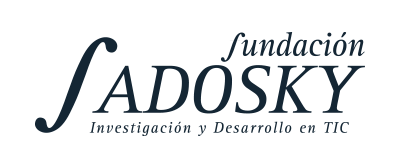
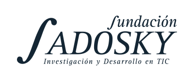

Esta es la página del Workshop en Técnicas de Programación Científica (WTPC).
La edición 2019 se llevó a cabo en la Universidad Nacional de Córdoba, entre el 15 y el 26 de julio de 2019.
El WTPC es curso intensivo de dos semanas de duración (alrededor de 80hs). Durante la primera, los participantes asisten a presentaciones sobre conceptos fundamentales teóricos por las mañanas, mientras que por las tardes realizan sesiones obligatorias de hands-on específicos donde ponen en práctica los conceptos aprendidos. Durante la segunda semana, se proponen proyectos grupales en los que los participantes deben trabajar. El principal el objetivo de estos proyectos es el de poner a prueba globalmente los contenidos vistos en el curso, haciendo énfasis en el trabajo colaborativo.
Este curso está basado en los cursos dictados por el ICTP en los años 2014 y 2015, y en ediciones anteriores del curso (ver Clases). Agradecemos mucho (muchísimo) a Ivan Girotto, Axel Kohlmeyer y David Grellscheid por los cursos y toda la información que nos brindaron.
Para participar en el WTPC es requisito cumplir con el código de conducta.
 
